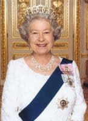

Why do we love the Queen?

On this, her 90th birthday, I wanted to ask - why do we love the Queen so much? Not everyone does. There are those who don’t feel we should have a monarch – who disapprove of any individual having such riches and privileges purely on the basis of their bloodline - but the fact remains that the British royal family bring in far more income than they cost and if it means a handful of people end up in palaces, then so what? It has ever been thus. Besides, many of those who are fundamentally opposed to the concept of a monarchy still tend to love the Queen herself, which brings us back to the original question – why?For me, I think it is because she is so dignified. Dignity is not, perhaps, a quality we give much credit to these days but in the queen we have a visceral pull to all it means. She is gracious, dutiful, smiling, unruffled. It is not that she has no personality, far from it, but that she operates in public as something greater than herself and in an age of ‘self’ that’s quite a feat.
She is a human being, of course she is – we saw that, particularly, in the ‘annus horribilus’ so many years ago now – but for Joe Public she is first and foremost ‘the Queen’ and something deep inside our British souls admires and even needs that. We love her, we admire her, above all, perhaps, we are proud of her.
England has always had queens. Even when we have had kings, we’ve still had queens, and although Elizabeth II is a reigning monarch, because of our modern constitution, she largely operates more as a queen-consort would have done throughout history – not so much there to actually lead, as to epitomise leadership.
Today’s queen makes very few actual, ruling decisions, so why is she there? To demonstrate our heritage, to present the public face of us as a nation, and to give the rest of us something to look up to - not because she, herself, is inherently better than us, but because she represents us. She is, in many ways, a distillation of us, and of the best of us.
And so queens have always been. It is nothing new to line the streets to catch a glimpse of a royal procession – of a bride in regal finery or a monarch in a golden carriage. We have been doing it throughout civilised time. Edward ‘the Confessor’ introduced the idea of ‘crownwearings’ in the early eleventh century to ‘jazz up’ the usual celebrations of Easter, Whitsun and Christmas. He quite literally wore his crown, and all his royal regalia and processed before his people (and as the court was itinerant, this was in several locations - Easter at Winchester, Whitsun at Westminster and Christmas at Gloucester). It was a way of inspiring confidence, of allowing the people to share in the hereditary riches and honour of the nation, and it was hugely popular. In an age before theatre as we know it now, the royals were a show everyone loved and that remains true today.
950 years ago, at the start of 1066, Edyth of Wessex was queen. She processed round London - as Elizabeth II will process on Castle Hill today - at the side of her husband King Harold at the start of what would turn out to be only a 9-month rule, cut tragically short at Hastings with huge consequences for England. Edyth was key to Harold for her brothers ruled Mercia (Midlands) and Northumbria and he needed her to help keep the North loyal against invaders. And keep them loyal she did, even if they could not, in the end, keep the invaders at bay.
But those invaders had queens too. Matilda of Flanders, wife of William the Conqueror and herself a direct ancestor of Alfred the Great, would become our queen later in 1066 and would rule alongside her husband for 16 years, with two of her sons ruling after them and her bloodline running deep down the royal line for centuries afterwards.
And there is another woman in the 1066 story who came very close to being our queen and yet of whom very, very few of us have heard. Elizaveta of Kiev was the wife of Harald Hardrada and therefore Queen of Norway. She was on the Orkneys in 1066 when Harald invaded the North with 300 ships full of Vikings intent on conquest. It is only by a miracle of misfortune and heroism that Hardrada was, against the odds, defeated at Stamford Bridge by Harold of Wessex. Had he not been, he could easily have become king, as Cnut had become king before him in 1016, exactly 1000 years ago.
Had that come to pass, Elizaveta would have been our queen. She would have been an exotic addition to the Saxon throne and a powerful one too, for she had sisters who were queens in France and Hungary and brothers ruling in Russia, Poland and Byzantium. Who knows what sort of a Britain we might live in today if we were descended, not from Norman royals, but from Norse ones!
But that is speculation. On Hardrada’s death, Elizaveta retreated to Scandinavia and it seems possible that Harold’s widow, Edyth, also escaped there. Matilda became queen and, in time, the people grew to admire and accept her. In truth, for many ordinary men and women (save those in the rebellious north), the dramatic events of 1066 probably had very little impact on their day-to-day lives. They loved their children and brought in their harvests and if they got a chance, they gawped at the pretty dresses and fine carriages and sparkling crowns of the woman who was their queen. After all, she was there – as now – to shine as an epitome of their nation, and of that they were – as we are now – proud.